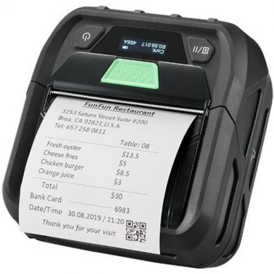
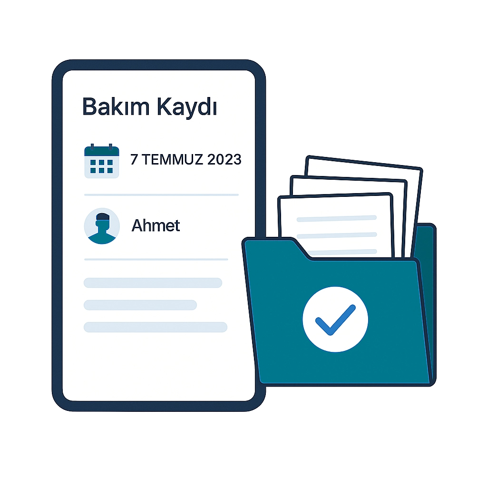
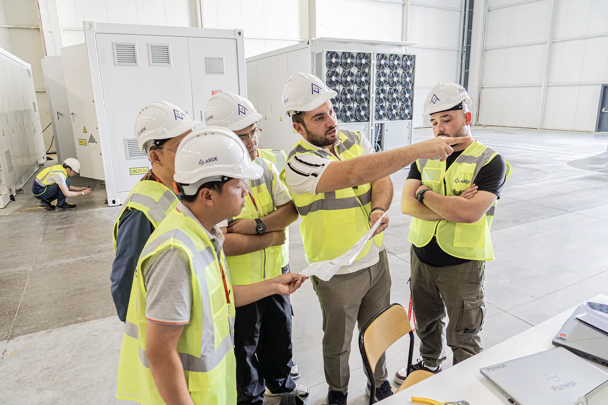
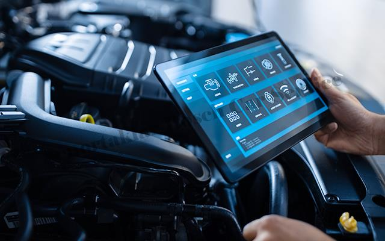

Hizmetler
Teknik servis hizmetlerimiz: onarım, bakım ve yerinde destek.
Mobil Yazıcı Onarımı
Her marka mobil yazıcınız için bakım, parça değişimi ve teknik onarım hizmeti.
El Terminali Tamiri
Depo, lojistik ve saha cihazlarınız için profesyonel arıza tespiti ve onarım.
Barkod Okuyucu Servisi
Teknik arızaların çözümü, sensör bakımı ve kalibrasyon işlemleri.
Tablet & Telefon Servisi
Ekran değişimi, batarya yenileme ve donanım tamir hizmetleri.
Çözümler
Kurumsal cihazlar için hızlı müdahale ve garantili servis.




Servis Sürecimiz
Net süreç, şeffaf bilgilendirme, güvenli teslim.
-

1. Adım
Arıza Tespiti
Cihazınız detaylı kontrol edilir, sorun tespit edilir.

2. Adım
Fiyat & Onay
İşlem ve maliyet bilgisi paylaşılır, onay sonrası işleme alınır.
3. Adım
Onarım & Kalibrasyon
Gerekli onarım/parça değişimi yapılır, cihaz kalibrasyonu tamamlanır.

4. Adım
Test & Teslim
Cihaz test edilir, çalışır şekilde teslim edilir.
Hızlı
Güvenli
Servisİletişim
Servis talebi ve teknik destek için bizimle iletişime geçin.
Hızlı servis talebi için WhatsApp’tan yazabilir veya bizi arayabilirsiniz. Kurumsal servis taleplerinde cihaz modeli ve arıza bilgisini iletmeniz yeterlidir.
📍 Mersin Yenişehir, Cumhuriyet Mahallesi 1657 Sokak No:19 Yücer Apartmanı🕒 Çalışma Saatleri: 09:00 – 18:00📞 +90 553 454 91 33✉️ info@sofiabilisimteknik.comForm submission successful!To activate this form, sign up at
https://startbootstrap.com/solution/contact-formsError sending message!
Mobil Yazıcı Onarımı
Her marka mobil yazıcı için bakım, onarım ve parça değişimi.
Mobil yazıcılarda baskı problemleri, bağlantı sorunları, mekanik arızalar ve güç/batarya problemleri için profesyonel teknik servis sağlıyoruz. Arıza tespiti sonrası onay alınarak onarım gerçekleştirilir ve cihaz test edilerek teslim edilir.
- Hizmet: Mobil Yazıcı Servisi
- İşlem: Onarım / Parça Değişimi
El Terminali Tamiri
Depo ve lojistik cihazlarınız için profesyonel onarım hizmeti.
El terminallerinde ekran arızaları, tuş takımı problemleri, batarya ve şarj soketi sorunları gibi donanımsal arızalara teknik müdahale sağlıyoruz. Kurumsal cihazlar için hızlı süreç yönetimi ve minimum iş kaybı hedefliyoruz.
- Hizmet: El Terminali Servisi
- İşlem: Onarım / Parça Değişimi
Barkod Okuyucu Servisi
Teknik arıza çözümü ve kalibrasyon işlemleri.
Barkod okuyucularda okuma zayıflığı, bağlantı problemleri, sensör arızaları ve donanım sorunları için teknik servis hizmeti sunuyoruz. Gerekli durumlarda kalibrasyon işlemleri yapılarak cihaz performansı optimize edilir.
- Hizmet: Barkod Okuyucu Servisi
- İşlem: Onarım / Kalibrasyon
Tablet & Telefon Servisi
Ekran, batarya ve donanım değişimleri.
Tablet ve telefonlarda ekran kırılması, batarya zayıflığı, şarj soketi problemleri ve donanımsal arızalar için profesyonel teknik servis hizmeti sunuyoruz. İşlem sonrası cihaz test edilerek güvenli şekilde teslim edilir.
- Hizmet: Tablet & Telefon Servisi
- İşlem: Ekran / Batarya / Donanım Onarımı
Yerinde Servis
Saha müdahalesi ve kurumsal teknik destek.
İş yerinizde mobil yazıcı, el terminali ve barkod cihazları için yerinde teknik destek hizmeti sunuyoruz. Kurumsal müşteriler için planlı servis ve hızlı müdahale ile iş sürekliliğini korumayı hedefliyoruz.
- Hizmet: Yerinde Teknik Servis
- İşlem: Saha Müdahalesi / Destek